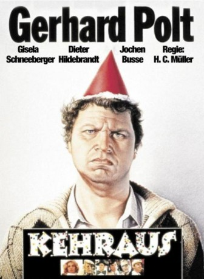

#5310 Kehraus
 
 IMDB-Wertung: 7.3 / 10
IMDB-Wertung: 7.3 / 10  Metascore: 0
Metascore: 0 
Polt spielt den naiven Gabelstaplerfahrer Weitel, dem vom gerissenen Vertreter Arno von Mehling ein ganzer Haufen absurder Versicherungen aufgeschwatzt werden. Als Weitel beinahe zu spät der finanzielle Kollaps schwant, macht er sich am Faschingsdienstag auf, um in den endlosen Korridoren des Versicherungsunternehmens nach von Mehling zu suchen und alles rückgängig zu machen. Dabei findet sich Weitel zwischen spanischen Señoritas und kühnen Piraten wieder. Die Pappnasenfraktion bereitet sich bereits aufgeregt auf den Höhepunkt des Angestelltendaseins vor: der alljährliche Faschingsball "Traumpolice".
Jahr: 1983
Dauer: 92 Minuten
FSK: 6
Land: West-Deutschland Studio: Neue Constantin FilmTonspuren:
Untertitel:
Auflösung: 1080p (1920x1080) Größe: 6717 MB
Genre: Komödie, Liebe
Regisseur: Hanns Christian Müller
Drehbuch: Matt JL Wheeler
Soundtrack:
Darsteller:
 Hansi Jochmann als Frl. Matussek
Hansi Jochmann als Frl. Matussek Monika John als Garderobiere
Monika John als Garderobiere- Gerhard Polt als Ferdinand Weitel
- Gisela Schneeberger als Annerose Waguscheit
- Nikolaus Paryla als Arno von Mehling
- Dieter Hildebrandt als Dr. Berzelmeier
- Jochen Busse als Professor Heinzel
- Hans-Günter Martens als Dr. von Rüden
- Karl Obermayr als Winfried Deutelmoser
- Veronika Faber als Frl. Miriam
- Hans Stadtmüller als Bemmerl
- Peter Welz als Markus Wandrey
- Wolfgang Gropper als Heinz Böhm
- Bruno Jonas als Wondrazil
- Helena Rosenkranz als Gerda Jessike
- Ursula Soremba als Garderobiere
- Maria Singer als Klofrau
- Konrad van Beust als Schwanthaler
- Horst Peukert als
- Egon Keresztes als
- Horst Pasderski als
- Josef Glas als Kontrolle
- Horst Tomayer als Kontrolle
- Michael Wachsmann als Herr Hitzl
- Gottfried Drexler als Dr. Amöbius
- Gunnar Holm-Petersen als
- Veronika von Quast als Janet
- Erika Deutinger als
- Claudia Raab als
- Sylvia Engelmann als
- Erhard Kölsch als Herr Rösner
- Helene Kongioumoyelos als Putzfrau
- Elisabeth Welz als Mutter Waguscheit
- Marianne Lindner als Elfriede Deutelmoser
- Harry Täschner als Erwin Jessike
- Georg Greis als
- Alex Vaupel als Herr Ott
- Heide Schneeberger als Frl. Bauer
- Gerry Thiele als Entertainer-Harry
- Charles M. Huber als African-Bavarian
- Gustl Datz als
- John Fischer als
- Werner Thielo als Feinkostlieferant
- Conny Jahn als
Datei: X:\1983\Kehraus (1983, FSK6, 1920x1080).mkv seit 12.01.2017
Festplatte: HD 1980-1986
 Es gibt insgesamt 35 Filme in der Gruppe '1983'
Es gibt insgesamt 35 Filme in der Gruppe '1983'